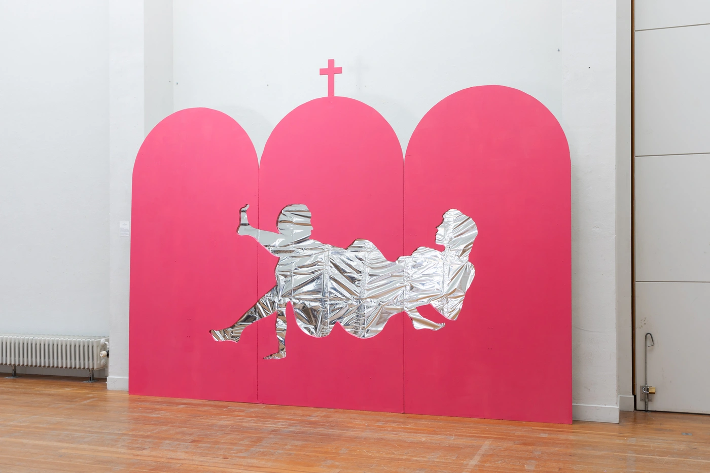
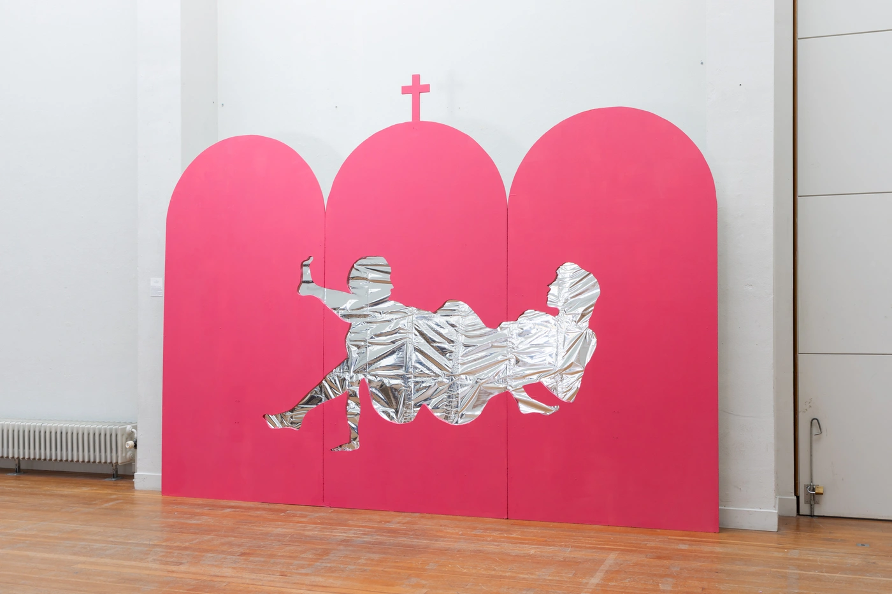

Eva Georgescu
Iconostasis 10
wood, acrylic paint, 250×375×100cm
Sacrilege is an act of deep affirmation and repositioning against the dominant culture. In this installation, the artist seeks to reflect on the omnipresence of religion and its role in the discourse concerning queerness. Many queer Romanians have been involved in some capacity with Orthodxism, or religion in general and have been confronted by hateful messaging. As they reinven themselves by unlearning these prevailing narratives, they go through a subversive transformation process, by re-appropriating and morphing religious imagery. The artist's work is in and of itself a process of transformation, an act of sacrilege. The wooden structure represents the three doors of an Orthodox iconostasis, which are only to be entered by men. The cutout of the two lesbians sexually engaging with each other plays with the idea of visibility beyond the frame. It claims space from the religious authorities who are guarding womxn from accessing the sacred.